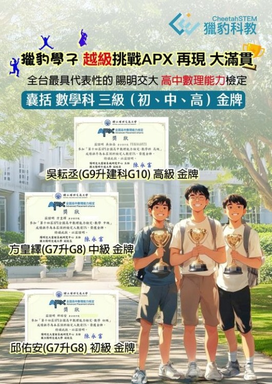

獵豹學子 越級挑戰APX 再現 大滿貫
恭喜! 陽明交大舉辦的APX高中數理能力檢定中,獵豹學子越級的優異表現，在三個級別都拿到金牌。
- 獵豹的教學理念不僅僅針對某一種入學考試或特定題型
- 獵豹的教材設計全面適應各種學習需求,真正提升孩子的數學素養
- 獵豹學子出色表現：考取全國各地科學班、通過各類考試、檢定、AMC等考試中均表現傑出。
* 吳耘丞同學(九升建科高一)：高級 金牌(高一到高三範圍+大學先修範圍)
高中資優數學FS課程
--
* 方皇繹同學(七升八)：中級 金牌(高一到高二範圍)
高中資優數學S+FS課程
AMC10、12課程
微積分FUC
程式設計
--
* 邱佑安同學(七升八)：初級 金牌 (高一範圍)
8000/8001(現在的小學PK)
J71A~J72A(含現在的FJ)
AMC8衝刺、AMC10暑期+衝刺
FA00科學班/數資班課程
獵豹實體課7~9
在這個充滿競爭的時代,，許多家長和學生都在尋找"捷徑"——對專攻某個特定考試，或強調掌握考古題的機構趨之若鶩。
但這真的是培養數學能力的正確方式嗎?
獵豹數學堅信：真正的數學能力展現不會被局限於單一競賽或考試，長期只有針對性的訓練終將弊大於利。

「談教學的過度擬合」
https://www.facebook.com/groups/695697124716309/permalink/1045454166407268/
如果您希望孩子：
- 不僅僅是應試高手,更是真正的數學能手
- 在各種數學挑戰中都能遊刃有餘
- 培養受用終身的數學思維能力
那麼，獵豹就是您的最佳選擇！
獵豹沒有華麗浮誇的廣告
沒有空洞虛幻的口號
獵豹憑實力說話
--
吳耘丞學習心得：
我覺得獵豹應該是幫助我紮根站穩腳步最重要的一環吧！我小時候就喜歡數學, 所以自己會找相關書籍和網頁來看，可是當你來到某一個程度的時候，可能是瓶頸吧，會需要有人指點和帶領，這時候我加入了獵豹的1001課程（現在FS課程），裡面含蓋許多不同主題，尤其是我最不熟的幾何，透過課堂講解，課後作業練習，獵豹的作業都不容易，常常很挫折，可是媽媽和老師都會鼓勵我，漸漸的寫題就順很多，代表我在這一點一滴當中進步了，讓我今天能夠順利考上建中科學班。
==
加入獵豹:
*『2024 獵豹S101高一(上)、S111高二(上)、S12N(高三進度) 、S12R(高中數學全複習)』開跑!』
https://www.facebook.com/groups/695697124716309/permalink/1492685775017436/
*『2024(上學期) 獵豹國中J/FJ數學課程開跑！』
課綱資優進度:J71S七(上),J71A七(上),J81A八(上),J91A九(上)
科學/數資班預備課程:FJ81八(上), FJ91九(上)
https://www.facebook.com/groups/695697124716309/permalink/1476828019936545/
*「2024 獵豹小學 3~6年級P系列 (上學期) 課程 開跑了!」
https://www.facebook.com/groups/695697124716309/permalink/1473428870276460/
*高中輕競賽FS：敬請期待
*小六/國中獵豹實體課：請洽星媽
---
詳情請見下方臉書連結:
https://www.facebook.com/share/p/ErH3u9suoMjHWrQC/